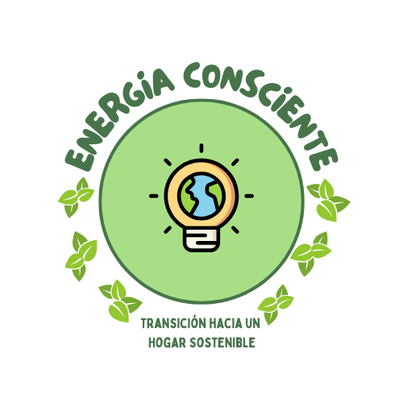

ENERGÍA CONSCIENTE: Transición a un hogar sostenible
ODS: ENERGÍA ASEQUIBLE Y NO CONTAMINANTE
El objetivo 7 pretende garantizar el acceso universal a fuentes de energía asequible, segura,
sostenible y moderna para el año 2030, clave para el desarrollo de la agricultura, las empresas, las
comunicaciones, la educación, la sanidad y el transporte. Pese a que la proporción de personas que no
tienen acceso a la electricidad se ha reducido más de la mitad desde el año 2000, es necesario seguir
trabajando para acabar con esta situación.
Por este motivo, las metas concretas fijadas para el año 2030 son:
- Garantizar el acceso universal a servicios energéticos asequibles, fiables y modernos.
- Aumentar la proporción de energía renovable en el conjunto de fuentes energéticas.
- Incrementar la cooperación internacional para facilitar el acceso a la investigación y a la tecnología relativas a la energía limpia.
- Ampliar la infraestructura y mejorar la tecnología para prestar servicios energéticos modernos y sostenibles para todos.
Selección del contexto del ODS
El combustible más utilizado en México es el Gas LP
Durante décadas, combustibles fósiles como el carbón, el petróleo o el gas han sido las principales
fuentes de energía eléctrica y para uso doméstico, pero su quema produce grandes cantidades de gases
de efecto invernadero, causantes del cambio climático y perjudiciales para el bienestar de las personas y
el medioambiente.
Incrementar considerablemente la participación de las energías renovables en la demanda de energía
eléctrica y de uso doméstico, es esencial para afrontar los grandes retos que enfrenta el mundo, como la
reducción de la producción de emisiones de carbono. Por ello, es preciso incrementar el acceso a
combustibles y tecnologías limpias y seguras para actividades de uso doméstico como cocinar y bañarse.
Una de las soluciones más efectivas es la instalación de calentadores solares, que aprovechan la energía
del sol para generar agua caliente, reduciendo significativamente el uso de combustibles fósiles y el
impacto ambiental asociado.
En México, el combustible más utilizado en viviendas es el Gas LP, representando el 76.01% del
consumo, seguido por la leña con un 13.28% y el gas natural con un 8.62% (Encuesta Nacional de
Ingresos y Gastos de los Hogares, ENIGH 2022). México consume anualmente 8.5 millones de
toneladas de Gas LP (Asociación Mundial del Gas LP ), de las cuales el 45.8% se destinan al uso
residencial (ENIGH 2022). Esto refleja una alta dependencia de combustibles fósiles para uso
residencial, de ahí la importancia de implementar alternativas sostenibles. Por ello, la instalación de
calentadores solares no solo podría reducir considerablemente la demanda de este combustible en
los hogares, sino también promoviendo un cambio hacia energías renovables y apoyando los
compromisos del país para mitigar el cambio climático, así como garantizar el acceso a fuentes de
energía limpias.
Propósito del proyecto
El objetivo es sensibilizar a los usuarios sobre su consumo de gas LP en el hogar, fomentando la transición hacia energías renovables y mejorando la eficiencia energética. Esto no solo implica reducir el consumo y los costos, sino también minimizar el impacto ambiental. Además, la iniciativa busca facilitar el monitoreo del uso de diferentes fuentes de energía, medir el acceso a recursos eléctricos y domésticos, y promover políticas públicas que impulsen un uso más sostenible de la energía.
Referencias
- De Energía, C. R. (s. f.). Precios máximos aplicables de Gas LP. gob.mx. https://www.gob.mx/cre/documentos/precios-maximos-aplicables-de-gas-lp?idiom=es
- Moran, M. (2024, 26 enero). Energía - Desarrollo sostenible. Desarrollo Sostenible. https://www.un.org/sustainabledevelopment/es/energy/
- De Estadística y Geografía, I. N. (s. f.). API del Banco de Indicadores. https://www.inegi.org.mx/servicios/api_indicadores.html
- El combustible más utilizado en México es el Gas LP. (2024, 13 marzo). ONEXPO. Recuperado 15 de noviembre de 2024, de https://www.onexpo.com.mx/NOTICIAS/EL-COMBUSTIBLE-MAS-UTILIZADO-EN-MEXICO-ES-EL-GAS-L_iGkUK/#:~:text=El%20consumo%20dom%C3%A9stico%20mundial%20es,de%20toneladas%20de%20Gas%20LP.
- Secretaría de Energía [SENER]. (2022). Demanda y Consumo 2022-2036. En Programa de desarrollo del Sistema Eléctrico Nacional 2022-2036. https://base.energia.gob.mx/prodesen22/Capitulo6.pdf
- Patrones de consumo energético en el sector residencial de México: un análisis desde la perspectiva de usos finales. (2022). https://conahcyt.mx/wp-content/uploads/pronaces/micrositios/energia_y_cambio_climatico/energia/cuadernos_tematicos/Cuaderno_Tematico_I_Pronaces_ECC_ISBN_final.pdf
- Calentadores de agua en el hogar. (2021). En gob.mx. Recuperado 16 de noviembre de 2024, de https://www.gob.mx/cms/uploads/attachment/file/641945/Infograf_a_calentadores_de_agua__1_.pdf